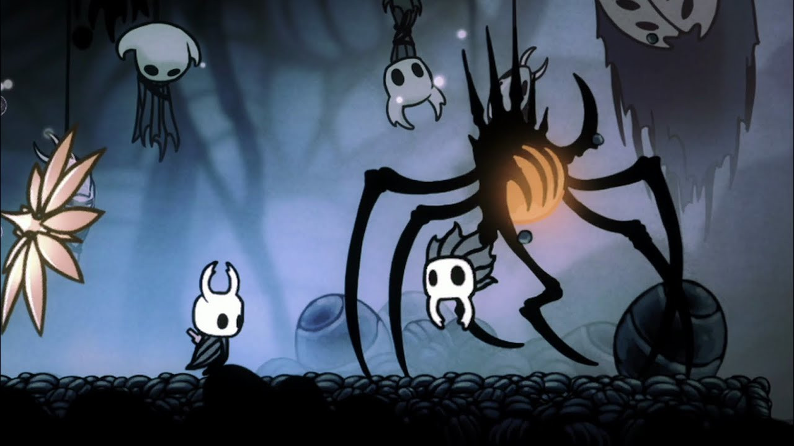
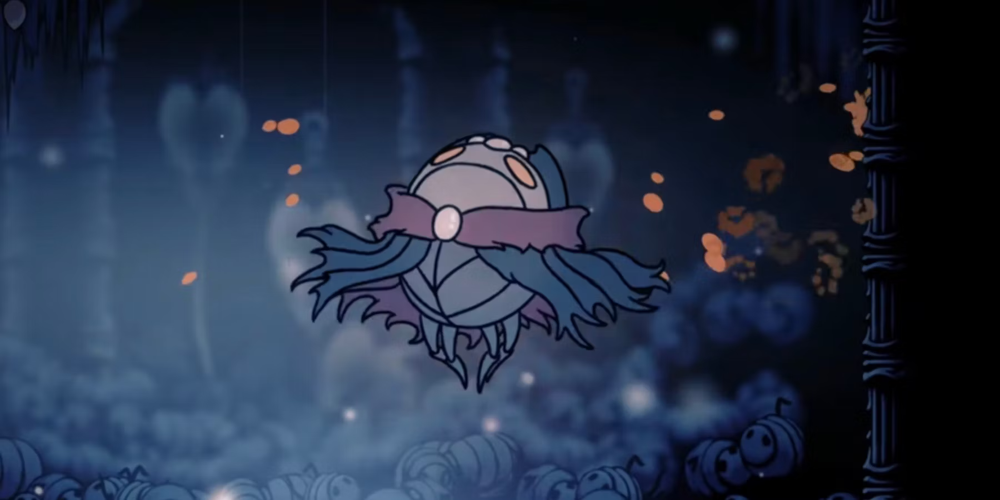

Contexto, história, informações de bosses e muito mais!
O que é Hollow Knight?
Hollow Knight é um clássico jogo 2D desenvolvido e publicado pela Team Cherry, onde nosso personagem se encontra num vasto mundo, sem objetivos inicialmente, e precisa explorá-lo, revelando o passado sombrio de Hallownest, lugar onde o jogo principal se passa.
Sendo um jogo de exploração, você deve se aprofundar nas profundezas do reino de Hallownest para conhecer todos os lugares que escondem segredos, enfrentando bosses e inimigos em sua jornada. Hollow Knight pode até ser em 2D, mas com certeza é um jogo eletrizante quando se está no meio de uma luta, lutando pela sobrevivência, bem como pode ser um jogo encantador enquanto explora as maravilhas escondidas do reino, acompanhadas de gráficos sensacionais com uma música de qualidade.
A equipe da Team Cherry, por mais que seja famosa, conta apenas com quatro pessoas! São elas Ari Gibson, William Pellen, Jack Vine e o compositor Christopher Larkin. Eles são responsáveis pela ambientação do jogo, as lutas emocionantes, as mecânicas criativas e até as famosas trilhas sonoras feita pelo Larkin são relembradas pelos fãs, transmitindo emoção em cada batalha!
História de Hollow Knight
Hollow Knight começa com uma cutscene que narra algum acontecimento importante: um casúlo, que contém três máscaras encustadas e exala uma fumaça laranja, é mostrado na tela, seguido de um grito sinistro. Nosso personagem, que não tem nome, é atraído para o reino de Hollownest por alguma força que não sabemos qual é. Após passarmos pelo tutorial, chegamos na primeira cidade do jogo: Dirtmouth, A Cidade Desvanescente
Nela, conhecemos o nosso primeiro amigo: o Ancião, que conta para nosso personagem (observação aqui, pois nosso personagem é mudo) como muitos aventureiros já tinham passado por Dirtmouth antes, mas todos se perderam quando decidiram entrar num poço próximo dali que prometia aventuras inimagináveis. Nosso personagem não pensa duas vezes antes de entrar no poço, e é aqui que conhecemos Encruzilhadas Esquecidas, uma das diversas áreas do jogo. E é aí onde nosso jogo realmente começa.
Principais áreas e bosses
Por mais que Hollow Knight tenha sido criado por apenas quatro pessoas, o jogo conta com nada menos que quarenta e sete bosses!. Neste artigo, será mostrada primeiramente a área e seu resumo e depois o principal boss dessa área com seu respectivo resumo.
Encruzilhada Esquecida
A Encruzilhada Esquecida é uma das primeiras áreas que os jogadores encontram em Hollow Knight, servindo como uma introdução ao vasto e misterioso reino de Hallownest. Apesar de sua aparente simplicidade, esse local carrega consigo uma atmosfera de mistério e decadência, perfeitamente alinhada com o tom sombrio e melancólico do jogo.
Uma vez um ponto vital de conexão para várias partes do reino, a Encruzilhada agora está em ruínas. Seus habitantes, criaturas que já tiveram propósitos definidos dentro de Hallownest, estão agora corrompidos pela Infecção, vagando sem rumo e atacando o protagonista, o Cavaleiro. A deterioração desse lugar ecoa a queda de Hallownest, uma civilização que outrora prosperou, mas foi lentamente consumida por seus próprios segredos.
Falso Cavaleiro
O Falso Cavaleiro é encontrado nas Encruzilhadas Esquecidas, dentro de uma sala que, quando o jogador entra e passa até um certo ponto, sua batalha se inicia automaticamente, sem que o jogador precise fazer alguma coisa. Ele contém uma forte armadura que usa para se proteger e utiliza uma maça pesada como arma, o que faz sua batalha ser árdua para um jogador iniciante, mas no nível certo para ainda conseguir se divertir com o primeiro boss.
O Falso Cavalheiro é, na verdade, um verme que habita o corpo de um dos Cindo Grandes Cavaleiros de Hallownest, que se apropriou desse corpo para tentar proteger seus irmãos. Isso é descoberto quando matamos ele e o verme sai de seu corpo, morrendo logo em seguida. Também descobrimos que sua maça na verdade é um outro verme que se utilizava de arma.
Caminho Verde
O Caminho Verde é caracterizado por seus tons de verde exuberante, plantas florescentes e árvores que cobrem quase toda a paisagem. Ele parece um jardim que cresceu descontroladamente, com grandes trepadeiras e fungos que preenchem o ambiente. Ao explorar, o jogador caminha por passarelas de madeira, plantações densas e charcos lamacentos.
A atmosfera é relaxante, com uma trilha sonora suave, mas o ar enevoado e as sombras ocultas entre as plantas criam uma sensação de mistério. Isso reflete bem o equilíbrio entre a vida e o perigo iminente que é típico do mundo de Hollow Knight.
O Caminho Verde também introduz um novo obstáculo para o jogador: poços e piscinas de ácido. Esses lagos ácidos são mortais ao toque, e o Cavaleiro deve usar suas habilidades de movimentação com precisão para evitar cair neles. Mais tarde no jogo, o jogador pode desbloquear a habilidade de nadar nesses poços ao obter o Lágrima de Isma, mas até então, a presença de ácido é um perigo significativo.
Hornet
Hornet é a filha de Herrah, a Besta, uma das três Sonhadoras que selaram o Vazio, e do Rei Pálido, governante de Hallownest. Isso a torna meio-vazia, devido à linhagem do Rei Pálido, e uma das figuras-chave para entender o colapso e a possível redenção do reino. Seu papel é proteger Hallownest, agindo como guardiã dos segredos do reino e do Selo Negro, que mantém o poder do Vazio contido.
Ao longo da jornada, Hornet aparece em momentos cruciais, testando o Cavaleiro e o forçando a provar sua força e propósito. Embora ela inicialmente pareça antagonista, sua verdadeira motivação é garantir que apenas aqueles dignos possam seguir adiante, já que a missão do Cavaleiro pode determinar o destino de Hallownest.
Ermos Fúngicos
Ermos Fúngicos (Fungal Wastes) é uma das áreas subaquáticas e subterrâneas de Hollow Knight, localizada a sul do Caminho Verde. É um dos locais mais bizarros e intrigantes do jogo, com uma atmosfera fúngica e uma variedade de inimigos e desafios únicos.
Os Ermos Fúngicos são caracterizados por uma paisagem dominada por fungos e esporos. O ambiente é sombrio e úmido, com grandes cogumelos e plantas que cobrem as paredes e o chão. A área é uma mistura de cavernas e cavernas subaquáticas, criando uma sensação de claustrofobia e isolamento. A paleta de cores é dominada por tons de verde, marrom e cinza, com um brilho esverdeado que emite de algumas das formas de vida fúngica.
Lordes Louva-a-Deus
As Lordes Louva-a-Deus são caracterizadas por sua aparência de louva-a-deus gigante, com longos membros cortantes e uma postura imponente. Elas têm uma aparência majestosa, com corpos esbeltos e armaduras que imitam as de um guerreiro inseto. A batalha contra elas é complexa e exige boa coordenação e conhecimento dos padrões de ataque.
A batalha contra as Lordes Louva-a-Deus ocorre em uma arena circular com várias plataformas. A luta se divide em três fases distintas, cada uma trazendo novos desafios e ataques. As Lordes Louva-a-Deus frequentemente trabalham em conjunto, exigindo que o jogador se concentre em dois inimigos ao mesmo tempo.
Ninho Profundo
O Ninho Profundo (Deepnest) é uma das áreas mais sombrias e inquietantes de Hollow Knight. Localizada abaixo dos Ermos Fúngicos e ao norte do Abismo, o Ninho Profundo é um labirinto de cavernas profundas e complexas, habitado por criaturas bizarras e hostis. A área é conhecida por sua atmosfera opressiva e os desafios únicos que apresenta aos jogadores.
O Ninho Profundo é um ambiente subterrâneo, escuro e labiríntico, com uma paleta de cores predominantemente escura e sombria. As cavernas são repletas de teias de aranha e estruturas orgânicas que refletem o habitat de uma colônia de aranhas gigantes. A iluminação é mínima, e o ambiente é constantemente envolto em névoa, o que adiciona uma sensação de claustrofobia e mistério.
Nosk

Nosk é uma das criaturas mais aterrorizantes do mundo de Hollow Knight, conhecido por sua habilidade de imitar a aparência de outras figuras, especialmente personagens queridos ou importantes para o protagonista, o Cavaleiro. Nosk é encontrado nas profundezas da área chamada Cavernas dos Restos, onde atrai o jogador para uma armadilha, assumindo a forma de uma figura familiar. Esse encontro leva a uma das batalhas mais assustadoras do jogo.
Nosk tem uma forma grotesca e aracnídea, com um corpo grande e patas longas. O que torna o chefe perturbador é sua habilidade de usar o rosto de outros personagens, dando a impressão de que ele está personificando alguém próximo ao protagonista. Quando você o segue, ele revela sua verdadeira e monstruosa forma.
Cidade das Lágrimas
A Cidade das Lágrimas (City of Tears) é uma das áreas centrais e mais icônicas de Hollow Knight. Localizada a leste do Caminho Verde e a norte do Ermos Fúngicos, a Cidade das Lágrimas é uma metrópole subterrânea dilapidada que serve como o coração político e cultural de Hallownest.
A Cidade das Lágrimas é uma vasta e sombria metrópole em ruínas, com uma arquitetura grandiosa e imponente, mas agora decadente e cheia de umidade. As ruas estão cobertas de água, e o ambiente é constantemente chuvoso, criando um clima melancólico e opressivo. O design do local é inspirado por uma mistura de estilos góticos e arquiteturas majestosas, refletindo a antiga glória do lugar antes de seu colapso.
Mestre das Almas

O Mestre das Almas é uma figura trágica em Hollow Knight. Ele, assim como muitos dos seres em Hallownest, foi corrompido pela praga que aflige o reino. Obcecado em adquirir poder e usar a alma como fonte de energia, o Mestre das Almas acreditava que poderia transcender a mortalidade e alcançar um estado superior. Sua obsessão levou a experimentos perigosos com a alma, o que resultou na destruição de muitos de seus seguidores e na transformação da Cidade das Lágrimas em um local sombrio e desolado.
O Mestre das Almas tem uma aparência imponente, vestindo uma túnica longa e flutuando no ar. Ele é facilmente reconhecido por sua cabeça em forma de máscara de xamã, com olhos grandes e penetrantes. Durante a batalha, ele usa ataques poderosos baseados em alma, demonstrando seu controle avançado sobre essa energia.
Bom, pessoal, por hoje é isso! Espero que tenham se animado para jogar Silksong, então é melhor conhecer Hollow Knight e jogá-lo agora! Hollow Knight pode ser comprado na Steam através desse link, então compre Hollow Knight!